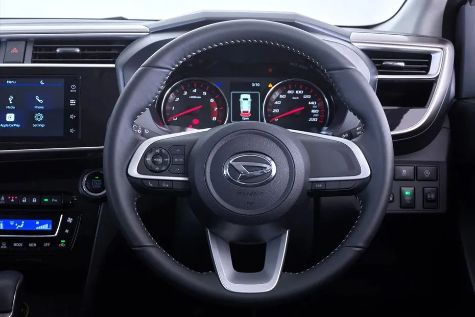
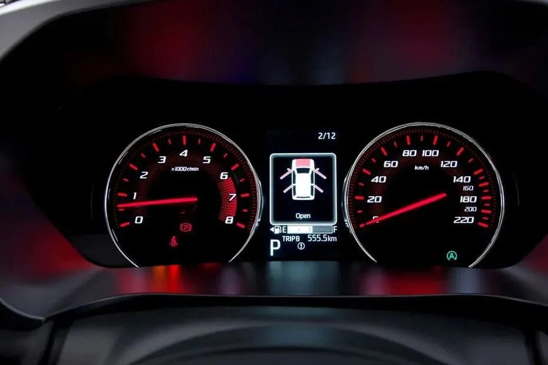
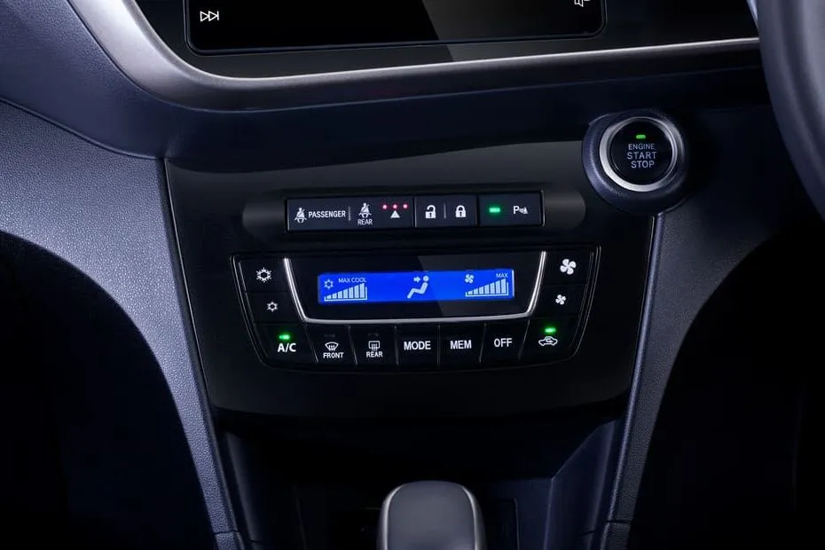

Sirion

Daihatsu New Sirion 2024 adalah 5 Seater yang tersedia dalam daftar harga Rp230,35 - 239,55 juta di Indonesia. Mobil ini menawarkan desain eksterior yang lebih stylish dan sporty, serta dipadukan dengan sistem keamanan terbaik saat ini. Sebagai contohnya adalah hadirnya fitur Dual SRS Air Bag yang memberikan perlindungan dan keamanan maksimum bagi pengendara mobil Daihatsu Sirion.
- Desain Modern dan Sporty - Daihatsu Sirion New 2024 hadir dengan desain yang lebih dinamis dan sporty, memberikan kesan elegan dan berkelas. Dengan garis-garis bodi yang tegas dan aerodinamis, Sirion siap membuat Anda bangga setiap kali mengendarainya.
- Performa Tangguh dan Efisien - Ditenagai oleh mesin 1.3L yang efisien, Sirion menawarkan performa berkendara yang tangguh dan hemat bahan bakar. Dengan pilihan transmisi CVT, Sirion memberikan pengalaman berkendara yang halus dan responsif.
- Kenyamanan dan Keamanan Terdepan - Sirion New 2024 dilengkapi dengan fitur-fitur kenyamanan dan keamanan terdepan untuk memastikan perjalanan Anda dan keluarga selalu aman dan nyaman. Dari sistem audio canggih hingga fitur keselamatan modern seperti Dual SRS Airbag.
- Interior yang Luas dan Fungsional - Nikmati ruang interior yang luas dan fungsional dengan desain yang modern. Dengan kapasitas 5 penumpang, Sirion memberikan kenyamanan optimal bagi semua penumpangnya, serta ruang bagasi yang cukup untuk kebutuhan Anda.
- Fitur Teknologi Terkini - Sirion New 2024 dilengkapi dengan berbagai fitur teknologi terkini seperti sistem hiburan touchscreen, konektivitas smartphone, dan banyak lagi. Semua dirancang untuk meningkatkan kenyamanan dan kesenangan berkendara Anda.
Spesifikasi Sirion
| Mesin | 1.3 L |
|---|---|
| Transmisi | CVT |
| Varian | 2 |
| Harga | Rp 230,35 - 239,55 juta |
| Dimensi | 3895 mm L x 1735 mm W x 1525 mm H |
| Warna | 5 Pilihan Warna |
| Kapasitas | 5 Kursi |
| Ground Clearance | 150 mm |
Interior


